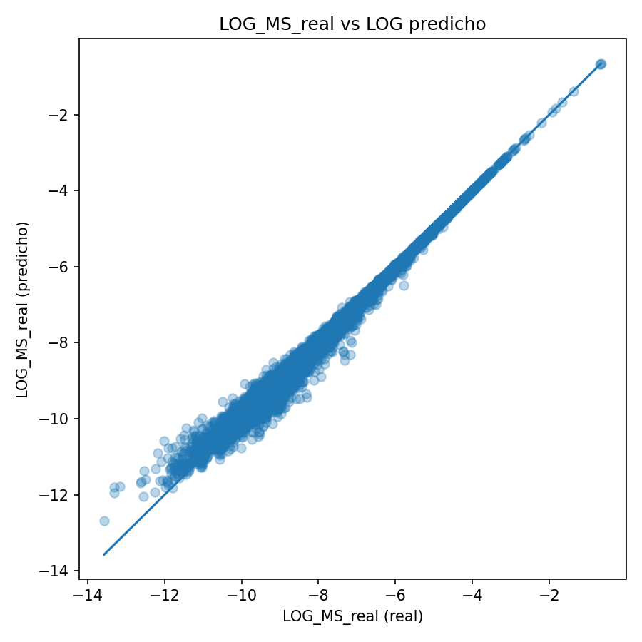

Lluc
LlucMarket Share Engine
My thesis wasn't a paper — it was a production system at Shalion that estimates the e-commerce sales nobody publishes, so brands can finally see their competitors' side of the shelf.
Retailers are walled gardens
A brand knows its own numbers — and nothing else. Competitor sales and marketplace volume are invisible, and existing tools only work on Amazon. The brutal constraint: ground truth existed for only ~2% of the products to estimate. Everything else is inference over noisy, scraped signals.
An engine that adapts to the data it finds
A modular Python pipeline whose orchestrator inspects the signals available per retailer-category and routes to the right model — so the system always answers, with the best method the data allows, unattended, every week.
Client actuals available → log-linear calibration of sales-vs-rank
Sales-proxy badges visible → rank–sales regression, smoothed across weeks
Neither → XGBoost trained teacher-student on S1's outputs
Cold start → priors-based fallback, so it never returns silence
Plus an "Inertia" momentum feature — each product vs. its trailing 4-week average — to catch promotions static features miss.

Signals that lie, labels that don't exist
- I had to reject deep learning — with 2% labels, capacity memorizes the labeled slice and hallucinates the rest. Interpretable classical models won on stability and explainability
- Best-seller ranks are stochastic and retailer-manipulated; scrapers break silently — every input is optional by design
- A Streamlit "control tower" monitors every run — a model earns production trust by being inspectable
The industry question isn't "how do I maximize the metric?" — it's "how do I build a system that processes millions of rows weekly without failing, whose numbers a client can trust?" Model complexity must be proportional to data availability.
Proprietary details of Shalion's platform are deliberately described at a high level.